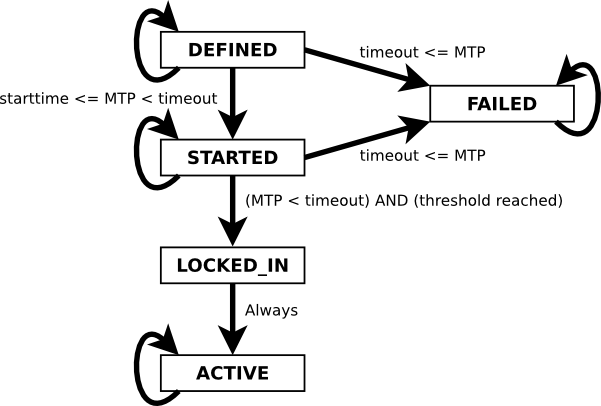

BIP9(Version Bits)
1 BIP地址
BIP: 9
Title: Version bits with timeout and delay
Author: Pieter Wuille <pieter.wuille@gmail.com>
Peter Todd <pete@petertodd.org>
Greg Maxwell <greg@xiph.org>
Rusty Russell <rusty@rustcorp.com.au>
Comments-Summary: No comments yet.
Comments-URI: https://github.com/bitcoin/bips/wiki/Comments:BIP-0009
Status: Final
Type: Informational
Created: 2015-10-04
License: PD
2 原因和目的
BIP9通过对区块 version 语义的重新解释(按bit位而不是数字)，提出了一种部署soft-fork的方法，使得多个fork可以同时进行。
BIP34提供了一种soft-fork升级的机制，矿工通过在挖出的区块的version数字的大小来表明是否支持某一改变。
但是这种机制只能同时支持一个改动，这就需要不同的提案之间互相配合。
此外，BIP34通过比较 nVersion >= 2 的方式，每一次改变，可选的version集就会越来越少。
BIP9通过将version解释称bits，每一个bit代表着一个改动。每个soft fork也分为 DEFINED, STARTED, LOCKED_IN, ACTIVE, FAILED 等不同的阶段。矿工通过在挖出的区块的相应bit位设置1来表明对soft-fork的支持。
当在一个区间内有超过一定比例的区块支持soft-fork则表示该soft-fork进入active阶段。
3 细节
3.1 soft-fork参数
每个采用BIP9的soft-fork都定义了以下几个参数：
- name: 对此次soft-fork的简述
- bit: 采用0-28哪一个bit位来部署
- starttime: 该bit位表示该soft-fork含义开始的时间（MTP），一般设置为大约包含该soft-fork软件发布后的一个月
- timeout: 到什么时候，该soft-fork被认为失败（到该时间的block还没进入
LOCKED_IN状态），一般是starttime后一年
3.2 状态
soft-fork四个状态的含义：
DEFINED: 每个soft-fork开始的状态STARTED: starttime之前的时间的block状态LOCKED_IN: 包含STARTED的retarget period之后的retarget peroid, 如果该retarget peroid里，支持该soft-fork(通过设置对于的version bit)的区块达到临界值，那么对于该soft-fork,blocks进入LOCKED_IN状态ACTIVE: 包含LOCKED_IN的retarget period之后的所有blocks，该soft-fork进入ACTIVE状态FAILED: 如果有retarget peroid超过timeout时间， 该没有进入LOCKED_IN状态，那么进入FAILED状态
采用BIP009上的一张图来表示状态变化：

什么是retarget period呢？对于bitcoin mainnet来说，从genesis block开始，每2016个blocks看作一个retarget period。
如何计算对于某一 soft-fork 的block的state?
对于genesis block,总是 DEFINED
对于在同一retarget peroid的blocks( floor(block1.height / 2016) = floor(block2.height / 2016) )来说，状态是一样的:
if ((block.height % 2016) != 0) {
return GetStateForBlock(block.parent);
}
其它情况下，block的state取决于上一个state，正如上图中所表示的逻辑关系那样。
3.3 bit位
Block中的version字段被解释为32位的小端数字，bit位是通过 1<<N 来判定的。
前3位为001，010和011留作后续升级使用。如果version不是以001开始的话，它被当作所有bits都是0
由于开头是001,所以32位的version值的范围为[0x20000000, 0x3fffffff]
4 相关实现
下面代码来自btcd的实现。
用一个 thresholdConditionChecker 接口将要检查的soft fork相关抽象出来
// thresholdConditionChecker provides a generic interface that is invoked to // determine when a consensus rule change threshold should be changed. type thresholdConditionChecker interface { // BeginTime returns the unix timestamp for the median block time after // which voting on a rule change starts (at the next window). BeginTime() uint64 // EndTime returns the unix timestamp for the median block time after // which an attempted rule change fails if it has not already been // locked in or activated. EndTime() uint64 // RuleChangeActivationThreshold is the number of blocks for which the // condition must be true in order to lock in a rule change. RuleChangeActivationThreshold() uint32 // MinerConfirmationWindow is the number of blocks in each threshold // state retarget window. MinerConfirmationWindow() uint32 // Condition returns whether or not the rule change activation condition // has been met. This typically involves checking whether or not the // bit associated with the condition is set, but can be more complex as // needed. Condition(*blockNode) (bool, error) }
实现上述接口的类型
// deploymentChecker provides a thresholdConditionChecker which can be used to // test a specific deployment rule. This is required for properly detecting // and activating consensus rule changes. type deploymentChecker struct { deployment *chaincfg.ConsensusDeployment chain *BlockChain } // Ensure the deploymentChecker type implements the thresholdConditionChecker // interface. var _ thresholdConditionChecker = deploymentChecker{} // BeginTime returns the unix timestamp for the median block time after which // voting on a rule change starts (at the next window). // // This implementation returns the value defined by the specific deployment the // checker is associated with. // // This is part of the thresholdConditionChecker interface implementation. func (c deploymentChecker) BeginTime() uint64 { return c.deployment.StartTime } // EndTime returns the unix timestamp for the median block time after which an // attempted rule change fails if it has not already been locked in or // activated. // // This implementation returns the value defined by the specific deployment the // checker is associated with. // // This is part of the thresholdConditionChecker interface implementation. func (c deploymentChecker) EndTime() uint64 { return c.deployment.ExpireTime } // RuleChangeActivationThreshold is the number of blocks for which the condition // must be true in order to lock in a rule change. // // This implementation returns the value defined by the chain params the checker // is associated with. // // This is part of the thresholdConditionChecker interface implementation. func (c deploymentChecker) RuleChangeActivationThreshold() uint32 { return c.chain.chainParams.RuleChangeActivationThreshold } // MinerConfirmationWindow is the number of blocks in each threshold state // retarget window. // // This implementation returns the value defined by the chain params the checker // is associated with. // // This is part of the thresholdConditionChecker interface implementation. func (c deploymentChecker) MinerConfirmationWindow() uint32 { return c.chain.chainParams.MinerConfirmationWindow } // Condition returns true when the specific bit defined by the deployment // associated with the checker is set. // // This is part of the thresholdConditionChecker interface implementation. func (c deploymentChecker) Condition(node *blockNode) (bool, error) { conditionMask := uint32(1) << c.deployment.BitNumber version := uint32(node.version) return (version&vbTopMask == vbTopBits) && (version&conditionMask != 0), nil }
核心计算state的方法:
// thresholdState returns the current rule change threshold state for the block // AFTER the given node and deployment ID. The cache is used to ensure the // threshold states for previous windows are only calculated once. // // This function MUST be called with the chain state lock held (for writes). func (b *BlockChain) thresholdState(prevNode *blockNode, checker thresholdConditionChecker, cache *thresholdStateCache) (ThresholdState, error) { // The threshold state for the window that contains the genesis block is // defined by definition. confirmationWindow := int32(checker.MinerConfirmationWindow()) if prevNode == nil || (prevNode.height+1) < confirmationWindow { return ThresholdDefined, nil } // Get the ancestor that is the last block of the previous confirmation // window in order to get its threshold state. This can be done because // the state is the same for all blocks within a given window. prevNode = prevNode.Ancestor(prevNode.height - (prevNode.height+1)%confirmationWindow) // Iterate backwards through each of the previous confirmation windows // to find the most recently cached threshold state. var neededStates []*blockNode for prevNode != nil { // Nothing more to do if the state of the block is already // cached. if _, ok := cache.Lookup(&prevNode.hash); ok { break } // The start and expiration times are based on the median block // time, so calculate it now. medianTime := prevNode.CalcPastMedianTime() // The state is simply defined if the start time hasn't been // been reached yet. if uint64(medianTime.Unix()) < checker.BeginTime() { cache.Update(&prevNode.hash, ThresholdDefined) break } // Add this node to the list of nodes that need the state // calculated and cached. neededStates = append(neededStates, prevNode) // Get the ancestor that is the last block of the previous // confirmation window. prevNode = prevNode.RelativeAncestor(confirmationWindow) } // Start with the threshold state for the most recent confirmation // window that has a cached state. state := ThresholdDefined if prevNode != nil { var ok bool state, ok = cache.Lookup(&prevNode.hash) if !ok { return ThresholdFailed, AssertError(fmt.Sprintf( "thresholdState: cache lookup failed for %v", prevNode.hash)) } } // Since each threshold state depends on the state of the previous // window, iterate starting from the oldest unknown window. for neededNum := len(neededStates) - 1; neededNum >= 0; neededNum-- { prevNode := neededStates[neededNum] switch state { case ThresholdDefined: // The deployment of the rule change fails if it expires // before it is accepted and locked in. medianTime := prevNode.CalcPastMedianTime() medianTimeUnix := uint64(medianTime.Unix()) if medianTimeUnix >= checker.EndTime() { state = ThresholdFailed break } // The state for the rule moves to the started state // once its start time has been reached (and it hasn't // already expired per the above). if medianTimeUnix >= checker.BeginTime() { state = ThresholdStarted } case ThresholdStarted: // The deployment of the rule change fails if it expires // before it is accepted and locked in. medianTime := prevNode.CalcPastMedianTime() if uint64(medianTime.Unix()) >= checker.EndTime() { state = ThresholdFailed break } // At this point, the rule change is still being voted // on by the miners, so iterate backwards through the // confirmation window to count all of the votes in it. var count uint32 countNode := prevNode for i := int32(0); i < confirmationWindow; i++ { condition, err := checker.Condition(countNode) if err != nil { return ThresholdFailed, err } if condition { count++ } // Get the previous block node. countNode = countNode.parent } // The state is locked in if the number of blocks in the // period that voted for the rule change meets the // activation threshold. if count >= checker.RuleChangeActivationThreshold() { state = ThresholdLockedIn } case ThresholdLockedIn: // The new rule becomes active when its previous state // was locked in. state = ThresholdActive // Nothing to do if the previous state is active or failed since // they are both terminal states. case ThresholdActive: case ThresholdFailed: } // Update the cache to avoid recalculating the state in the // future. cache.Update(&prevNode.hash, state) } return state, nil }